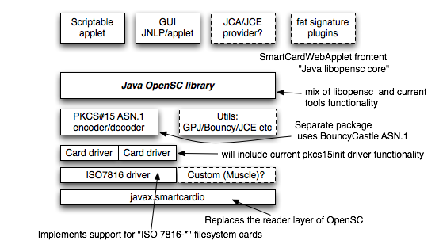

NB! This requires enabled Java 1.6+ (javax.smartcardio.*), download from here if needed.
This applet is supposed to be the easiest way to get started with smart cards on any modern client platform (Windows, Mac or Linux), written in pure Java and requiring no additional downloads, if you have a working PC/SC smart card reader attached to your computer.
Currently this page exists to test the integration of Java and various browsers on different platforms. When testing, restart your browser to be sure that the latest applet version is fetched from the web.
It must be transformed into a page that detects possible issues and gives user-friendly advice on what to do to let the Java application/applet run. (Is JavaScript enabled? Is Java enabled? Is it the correct version? Is the browser-platform-java combo known to have problems? etc)The applet itself will be capable of executing the following tasks:
The Java applet will come in three different flavors:
Under the hood, the goal is to re-implement OpenSC card drivers in Java (which provides far superior mechanisms for inheritance, which is used to implement most drivers in OpenSC) which now provides "native" access to smart cards via javax.smartcardio. Use of PKCS#11 modules might be added in the future, but is not on the table right now. Because all card drivers will have to be re-implemented in Java, not all cards usable with OpenSC will be usable via this method. A side-product of this project will be a separately packaged PKCS#15 ASN.1 encoder/decoder. 
For more information: